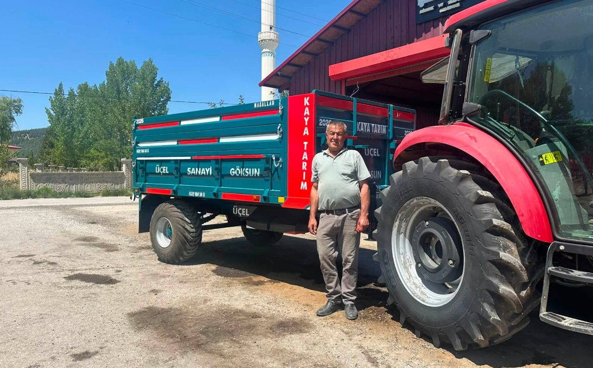

Römork
Tek dingil ve çift dingil seçenekleriyle, kendi imalatımız sağlam römorklar.
Göksun / Kahramanmaraş · İmalat ve Satış
Kendi imalatımız tarım makineleri ve ekipmanlarıyla çiftçinin işini kolaylaştırıyor, yılların ustalığını modern üretim anlayışıyla geleceğe taşıyoruz.
Göksun'daki atölyemizde üretim.
Farklı şehirlere satış ve gönderim.
Çiftçinin ihtiyacını sahada öğrendik.
Teslimattan sonra da yanınızdayız.
Neden Üçel?
Üçel Tarım Aletleri'ni tercih eden üreticiler için önemli olan dört şey.
Hızlı Başlangıç
Aradığınıza tıklayın, doğru yere yönlendirelim.
Ürünlerimiz
Römorktan pulluğa, kültivatörden mibzere kadar aradığınız tarım aletlerine göz atın. Fiyat ve güncel bilgi için WhatsApp'tan sorabilirsiniz. Kategorilere göre bakmak isterseniz tarım makineleri sayfamıza göz atabilirsiniz.
Tek dingil ve çift dingil seçenekleriyle, kendi imalatımız sağlam römorklar.

Toprak işlemede dayanıklı ve verimli pulluk çeşitleri.

Toprak hazırlığı ve yüzey işleme için sağlam gövde ve diş yapısı.

Kendi imalatımız traktör ön yükleyici sistemleri.

Homojen dağılım sağlayan gübre serpme ekipmanları.
Otlak ve çayır biçiminde hızlı, verimli çalışan ekipmanlar.
Sulama ve taşıma için dayanıklı tarım tankerleri.
Sattığımız ve sık kullanılan ekipmanlar için yedek parça desteği.
Listede görmediğiniz bir ekipman mı arıyorsunuz? Sorun, birlikte bakalım.
Listelenmeyen bir ekipman mı arıyorsunuz? 0532 480 30 51 numaralı hattımızdan sorun, birlikte bakalım.

Kendi İmalatımız
Her ürün, atölyemizde başlayan bir emeğin sonucudur. Üçel Tarım Aletleri olarak yalnızca ürün satmıyor; kendi imalatımız ve işçiliğimizle tarımın ihtiyaçlarına yönelik çözümler üretiyoruz.
İmalat sürecimizi görün →
Baba Oğul, Aynı Emek
Her işin bir başlangıcı vardır. Üçel Tarım Aletleri'nin hikâyesi de bir babanın yanında öğrenilen meslek, yıllar içinde kazanılan tecrübe ve bu emeğin oğula aktarılmasıyla başladı.
Bugün Göksun'daki atölyemizde ürettiğimiz her tarım aletinin arkasında yalnızca metal, kaynak ve makine değil; yılların ustalığı, sahadaki tecrübe ve çiftçinin ihtiyacını bilmenin verdiği anlayış var.
Değişen teknolojiye ayak uyduruyoruz. Ama işimizi hakkıyla yapma anlayışımızı değiştirmiyoruz. Babadan oğula aktarılan ustalık, bugün Üçel Tarım Aletleri'nde üretime devam ediyor. Göksun'da üretiyor, Türkiye'nin dört bir yanındaki çiftçiye ulaştırıyoruz.
Emin Değil Misiniz?
Sana uygun tarım ekipmanını birlikte belirleyelim.
İkinci El Tarım Aletleri
Uygun fiyatlı ikinci el ekipman mı arıyorsunuz? Elimizdeki ikinci el tarım aletleri sürekli değişiyor — güncel listeyi öğrenmek için arayın ya da WhatsApp'tan yazın, "bu ürün hâlâ mevcut mu?" diye sorun, hemen bakalım.
Takas ve Değerlendirme
Eski tarım aletiniz varsa fotoğrafını gönderin. Birlikte değerlendirelim.
Römork · Pulluk · Kültivatör · Mibzer · Diğer ekipmanlar
Sahadan Gerçek Kareler
Göksun Sanayi Sitesi'ndeki atölyemizden, ürettiğimiz ekipmanlardan ve teslimat günlerinden gerçek kareler. Ürettiğimiz ekipman gerçekten sahada kullanılıyor.
Üçel'i Çalışırken Görün
Üretim — Kendi İmalatımız Römork
Ürünler — Kültivatör
Ürünler — Pulluk
Ürünler — Su Tankeri ve Gübre Serpme
Tarladan — Ön Yükleyici
Atölyemiz
 Üretim — Sağlam İşçilik
Üretim — Sağlam İşçilik
Çiftçinin İşine Yarayacak Bilgiler
Sık Sorulan Sorular
Göksun Sanayi Sitesi, Yeni Mah., 46660 Göksun/Kahramanmaraş adresindeyiz.
Evet, ikinci el tarım aletleri alıp satıyoruz. Elinizdeki ekipmanı değerlendirmek için bizi arayabilir ya da WhatsApp'tan fotoğraf gönderebilirsiniz.
Evet, kullanmadığınız tarım aletinizi yeni veya ikinci el bir ekipmanla takas edebiliriz. Fotoğraflarını WhatsApp'tan gönderin, birlikte değerlendirelim.
Fiyatlar ebat, kapasite ve modele göre değişiyor. Güncel fiyat ve stok bilgisi için bizi arayın ya da WhatsApp'tan yazın.
Traktörünüzün modelini, beygir gücünü ve yapacağınız işi bize anlatın; birlikte size uygun ekipmana bakalım.
Evet, Türkiye geneline gönderim yapıyoruz. Bulunduğunuz şehri belirtirseniz nakliye seçeneklerini birlikte konuşuruz.
Genel bakım/tamir servisi vermiyoruz; odağımız satış, kendi imalatımız ve ikinci el alım-satımı.
Evet, sattığımız ve sık kullanılan ekipmanlar için yedek parça bulunduruyoruz. İhtiyacınızı bize iletin, uygunluğuna bakalım.
Evet, kendi atölyemizde imal ettiğimiz römork, kültivatör gibi ekipmanlarda standart ölçülerin dışında ihtiyacınıza göre özel imalat da yapabiliyoruz. Traktörünüzü ve işinizi bize anlatın, birlikte konuşalım.
Resmi bir garanti belgesi sunmuyoruz; ancak imal ettiğimiz ve sattığımız her ürünün arkasında duruyoruz. Bir sorun yaşarsanız bizi arayın ya da WhatsApp'tan yazın, birlikte çözüm bulalım.
İletişim
Traktörünüzün modelini ve yapmak istediğiniz işi bize yazın, size uygun seçenekler hakkında konuşalım.
Bahadır Kocabaş
Yeni Mah., Göksun Sanayi Sitesi
46660 Göksun / Kahramanmaraş
Her gün 08:00 – 19:00
Ayrıntılı iletişim sayfamıza gidin · Göksun'da hizmetlerimiz hakkında
Aradığınız ekipmanı bulamadınız mı? Bize traktörünüzü, yapmak istediğiniz işi veya ihtiyacınızı anlatın.